Palisades Park, New Jersey · Class of 2027
Jacob Hanwool Choi
Nobody in my family had been through an American hospital before I translated for them. I am applying to nursing programs so that the next family does not have to bring a ten-year-old.
The Wait
A YGLE student documentary, a bilingual hospital card, and two resource flyers for Korean immigrants who put off care because of the language barrier.
THE WAIT | 당신의 말이 닿을 때까지 | A Student Documentary by YGLE, released October 2026. Jacob was the Production and Filming Lead: filming, camera work, and editing.
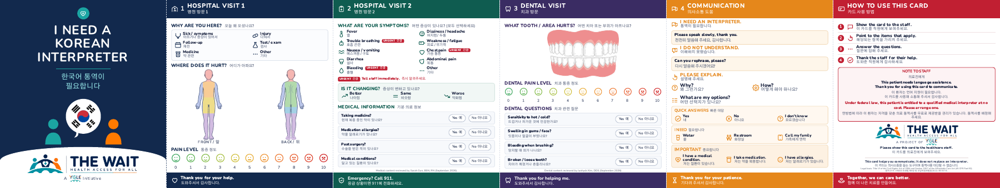
The patient communication card. Patients can point to a panel to request an interpreter, describe symptoms and pain, or explain a dental problem. The team reviewed its design together; medical content was reviewed by Sarah Gun, BSN, RN, and dental content by Junhyck Kim, DDS (September 2026). Download the card (PDF).
What happened in Tenafly
On October 17, 2026, Jacob and two teammates ran the project’s booth at the Korean Community Center in Tenafly. They handed cards to Korean seniors, many of whom described appointments they had been putting off, spoke with Tenafly’s mayor, and took requests for cards from translation services, elder support groups, and other organizations.
The team also produced two large-print flyers, in Korean and English, listing free and low-cost health screening and dental services in Bergen County, with phone numbers and a note on where Korean interpretation is available. Download the flyers (PDF).
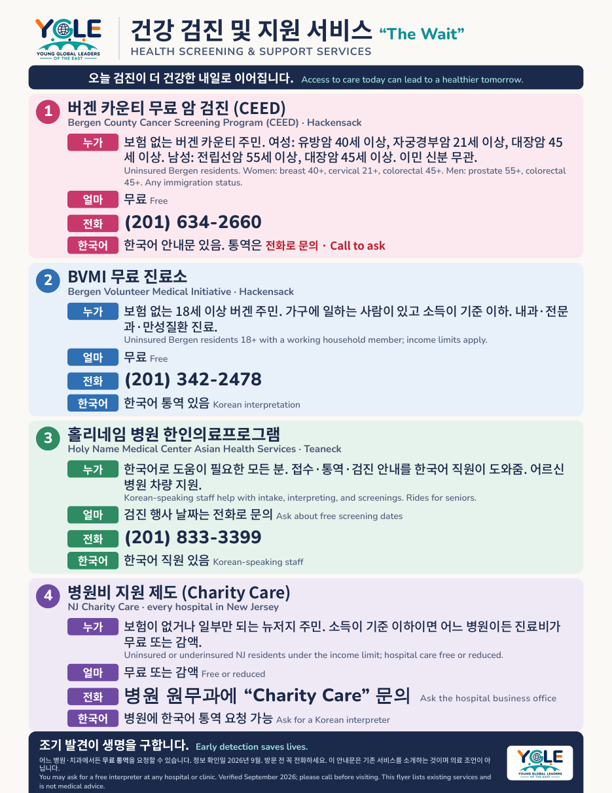
Path to nursing
Three places where Jacob learned to notice the patient who has gone quiet.
Interpreter for his parents
Jacob has carried his parents’ symptoms to their doctors, and the instructions back, since he was small. He learned early how much of a visit is lost when a patient decides it is easier to answer yes or no than to explain.
Lifeguard and swim coach
American Red Cross certified in Lifeguarding (Including Deep Water), CPR/AED for Professional Rescuers, and First Aid, valid through May 2028. Paid swim instructor and private coach since 2025.
Englewood Hospital
Patient and visitor guide at a six-time Magnet hospital. Jacob walks patients to the right department, learns what each unit does, and watches nursing teams at work.
Medical research
Mentored by a Johns Hopkins biostatistician, Jacob is comparing treatments for fungal and bacterial otitis externa across published studies. Paper in progress.
Intended study: nursing, with an interest in orthopedic and rehabilitative care.
Leadership, service, and work
Most of it in Bergen County, most of it every week.
- 2025 to presentDonation Coordinator, CDHW (Clothing Donations to Help Kids in the World). Intake, sorting, and delivery visits for new clothing to pediatric patients at New Jersey hospitals, including Hackensack University Medical Center. The program gave more than $15,000 in new clothing in 2025.
- 2025 to presentWellness Resources Lead, VOY (Voices of the Young). Keeps the mental health resources and crisis contacts in the Mo Soop peer support app and the Mo Ri ADHD app up to date, with review by a licensed professional.
- 2025 to presentDirector of Communications, YGLE (Young Global Leaders of the East). Outreach and messaging, and recruiting for the annual Global Leadership Forum.
- 2025 to presentLeading Mentor and Tutor, Walk Alongside. Coordinates the tutor schedule for a free tutoring, mentoring, and SAT prep program and tutors students who cannot afford private help.
- 2023 to presentVolunteer, Neighbor Plus. Saturday meal service every week since ninth grade; several hundred documented hours. President’s Volunteer Service Award, Gold (2024); Neighbor Plus Volunteer Service Award, Silver (2025).
- 2024 to presentStudent Volunteer, LiNK North Jersey Rescue Team. Awareness events and fundraisers for North Korean refugees.
- 2023 to presentVarsity and club swimming. All-Conference, two seasons; Second Team All-League (2025); state championship competitor; year-round with Rebels Aquatic Club.
Saturdays at Neighbor Plus
Packing meals in the morning, then handing them out on the street. Every week since ninth grade.
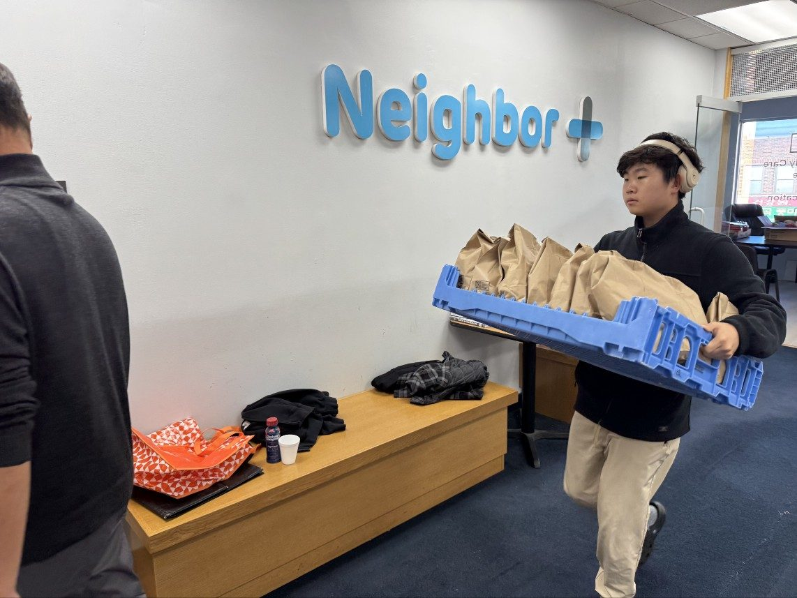
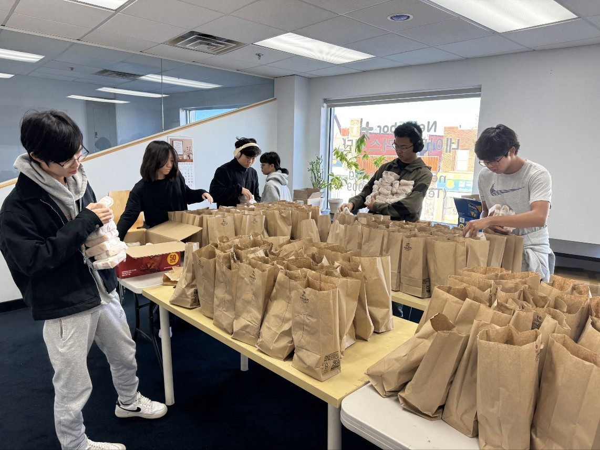
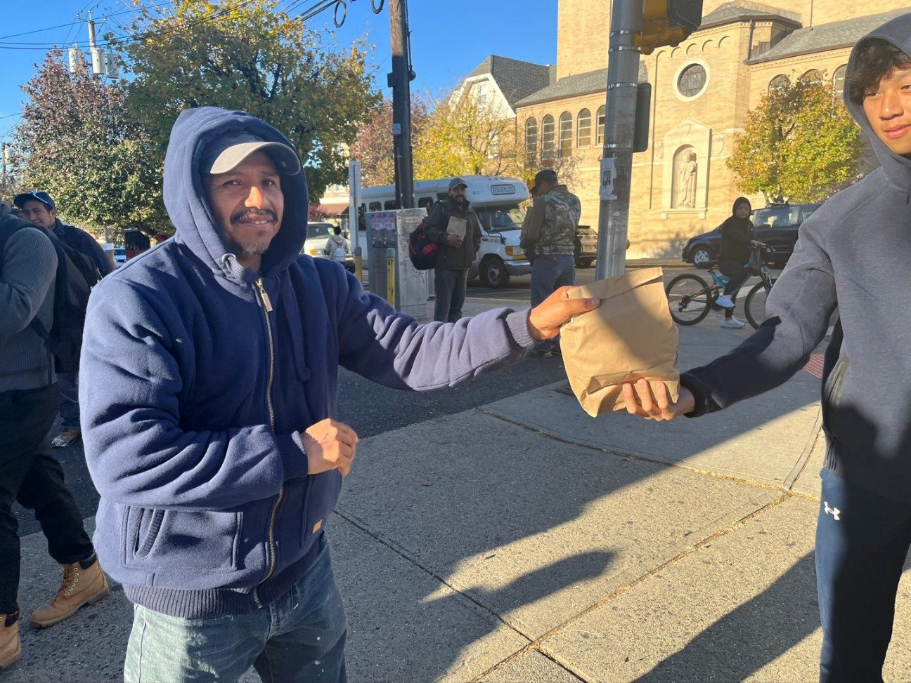
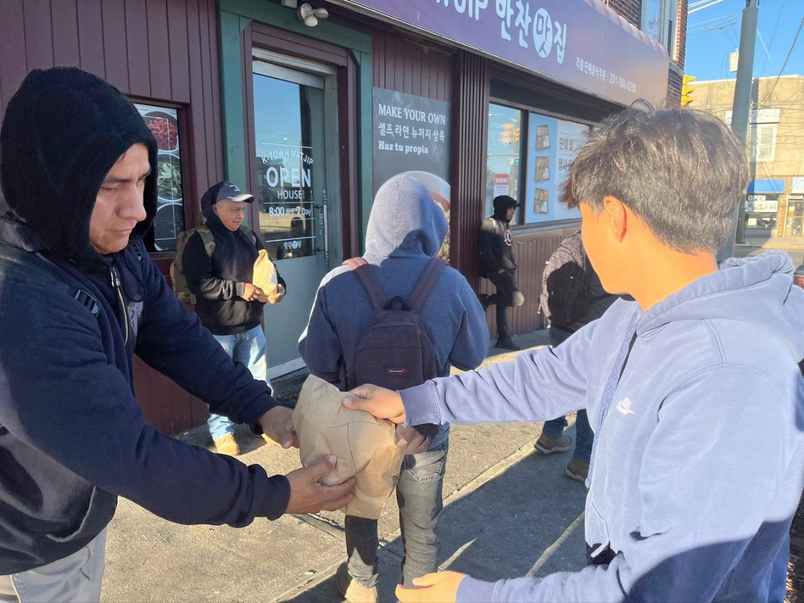
In the water
Varsity and club swimmer, lifeguard, and swim instructor at Palisades Park Swim Club.
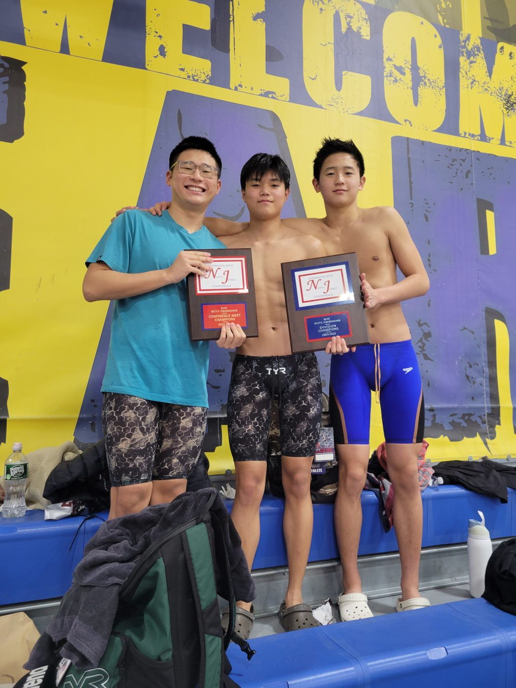
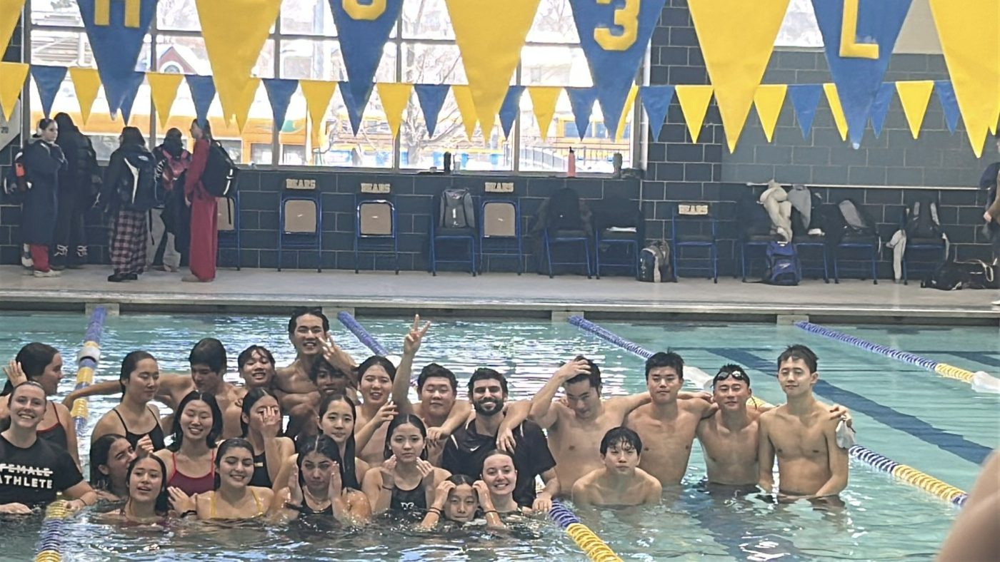
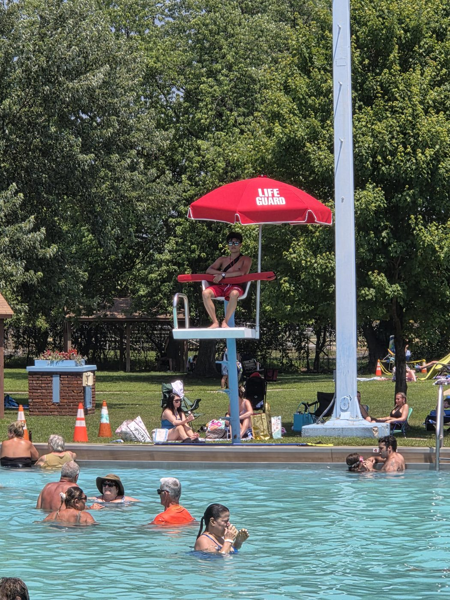
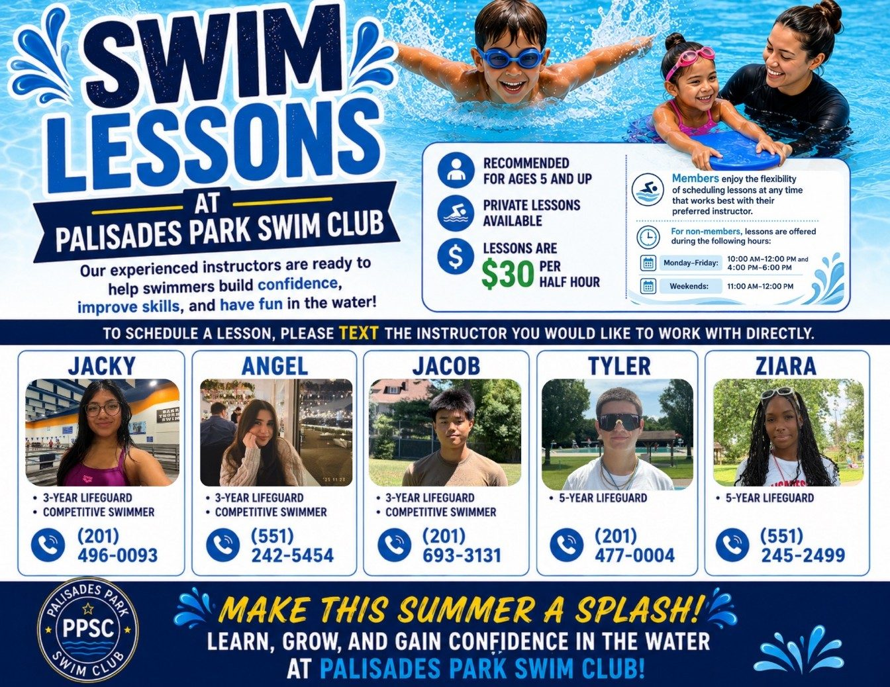
Korean Honor Society
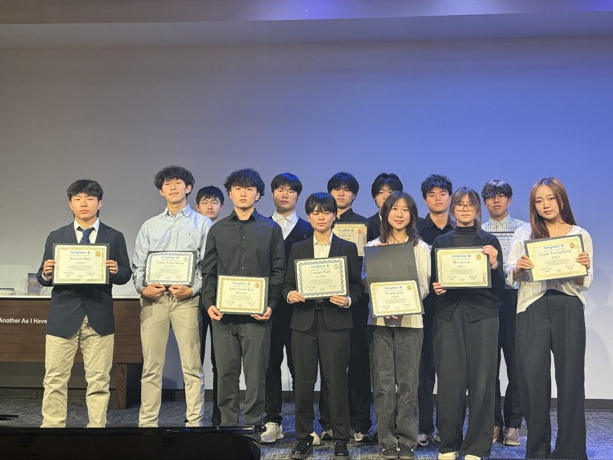
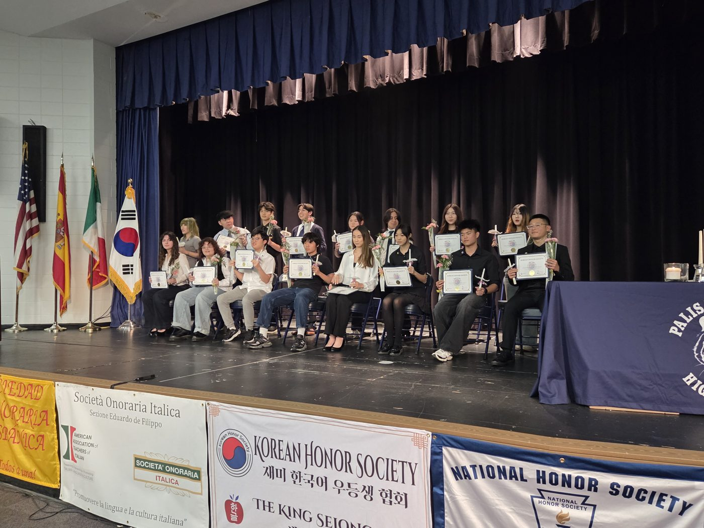
Résumé and recognition
College Board National Recognition Program, First-Generation and School Recognition Awards (2026) · Scholastic Art and Writing Awards, Honorable Mention (2026) · Korean Honor Society · Principal’s List · Honor Roll · Engineering Academy, Palisades Park Jr./Sr. High School